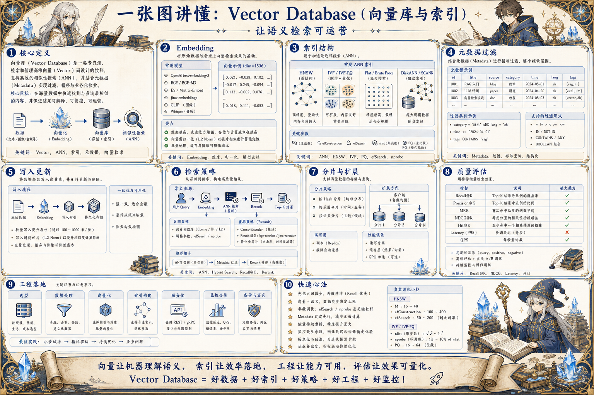
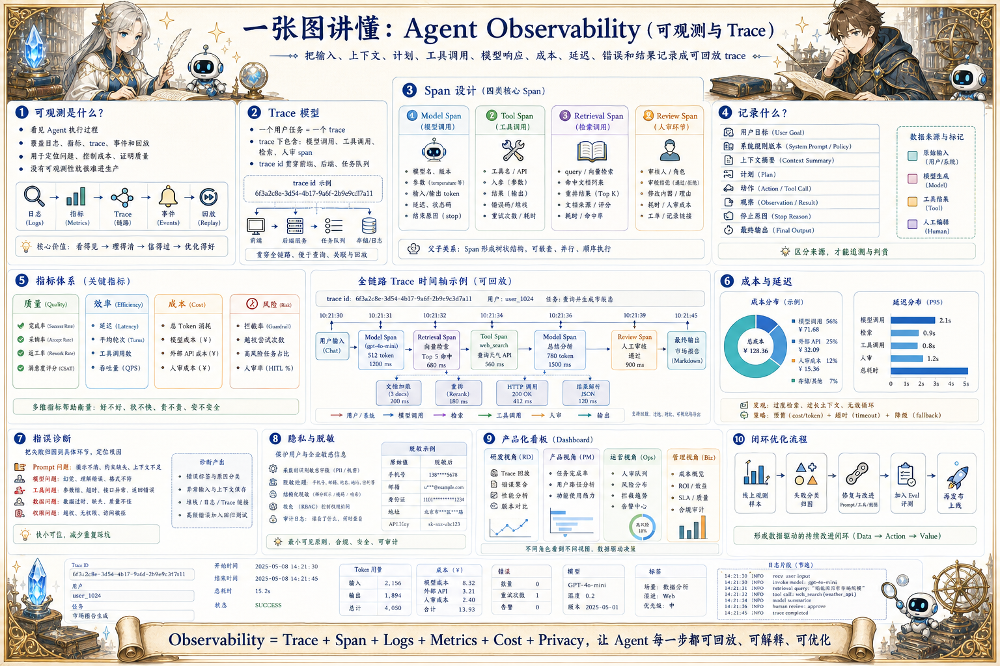
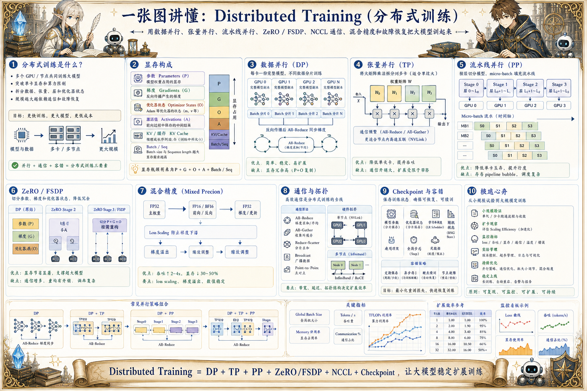
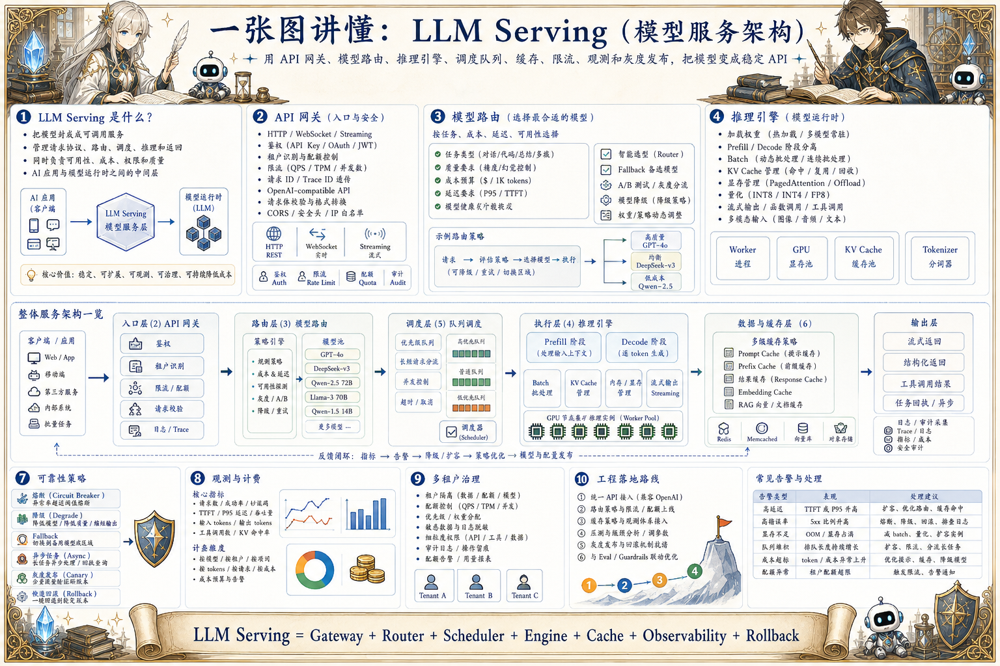
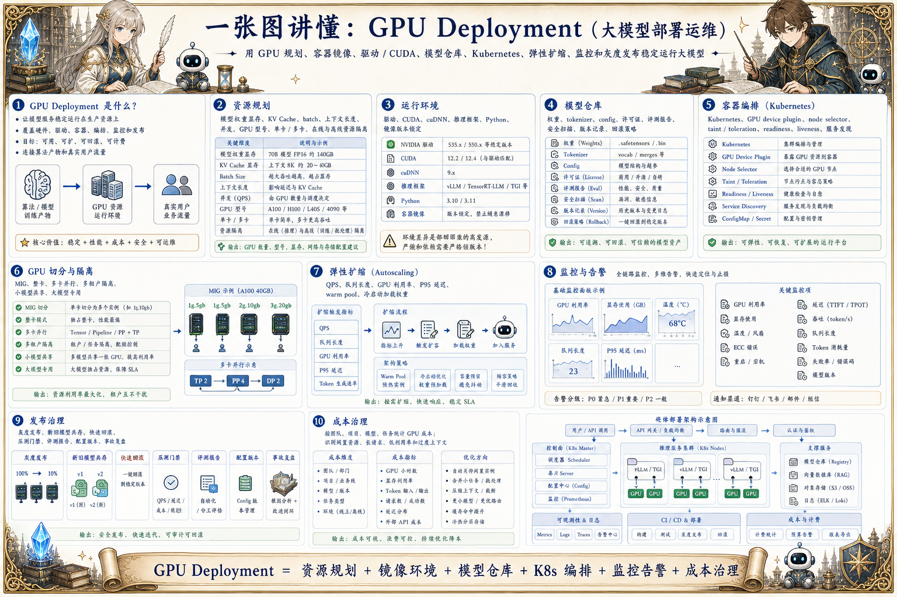
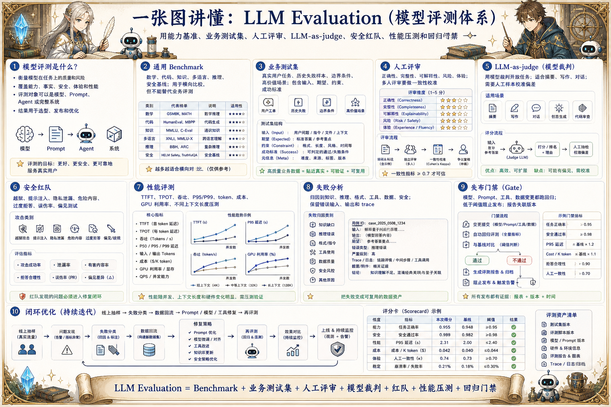
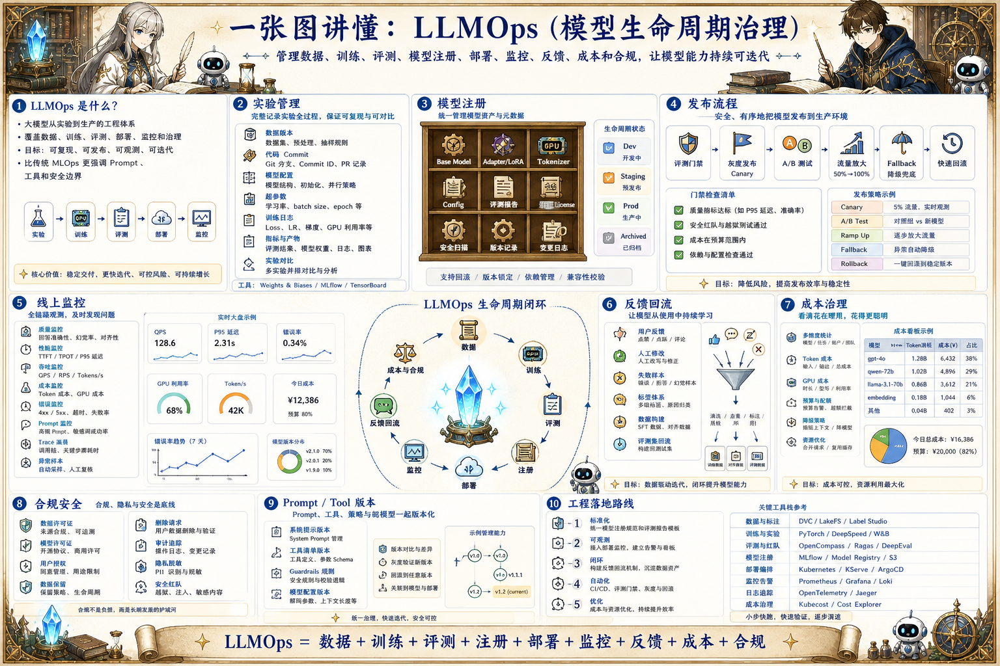

大模型 Infra · Gateway
Model Gateway：模型网关
围绕 OpenAI-compatible API、Provider 路由、模型降级、Key 管理、限流、成本统计和健康观测设计统一模型入口。
文章待补充把模型网关、协议、安全、向量库、可观测、训练基础设施、模型服务和 LLMOps 作为生产底座来整理。
四条线拆分成独立页面，当前页面只展示“大模型 Infra”专题内的完整图解。
从 RAG、Prompt、结构化输出到 Agent 运行、人审和产品体验，聚焦把模型能力做成可用产品。
把模型网关、协议、安全、向量库、可观测、训练基础设施、模型服务和 LLMOps 作为生产底座来整理。
从模型骨架、推理优化、KV Cache、调度、投机解码、量化到长上下文，关注延迟、吞吐、成本和质量取舍。
围绕 Tokenizer、学习范式、数据治理、预训练、监督微调、偏好对齐和蒸馏，解释模型能力如何被训练出来。
把模型网关、协议、安全、向量库、可观测、训练基础设施、模型服务和 LLMOps 作为生产底座来整理。
围绕 OpenAI-compatible API、Provider 路由、模型降级、Key 管理、限流、成本统计和健康观测设计统一模型入口。
文章待补充
从 Client、Server、Resources、Tools、Prompts、Transport、权限、日志和生命周期看 MCP 的价值。
文章待补充
从 Prompt Injection、数据脱敏、工具权限、越权拦截、内容安全、审计日志和红队测试设计模型安全边界。
文章待补充
理解 Embedding、ANN 索引、HNSW/IVF、元数据过滤、增量更新、分片、混合检索和向量库运维。
文章待补充
记录输入、计划、工具调用、模型响应、成本、延迟、错误和结果，让执行过程可回放。
文章待补充
理解 DP、TP、PP、ZeRO/FSDP、NCCL、混合精度、梯度累积、checkpoint 和训练故障恢复。
文章待补充
从网关、鉴权、路由、推理引擎、队列、缓存、限流、降级、灰度和可观测性设计稳定模型 API。
文章待补充
梳理 GPU 资源、CUDA/驱动、镜像、模型仓库、Kubernetes、MIG、扩缩容、监控、灰度和成本治理。
文章待补充
从通用 benchmark、业务评测集、人工评审、模型裁判、安全红队、性能指标和回归门禁看模型质量。
文章待补充
把数据、训练、评测、模型注册、部署、监控、反馈、成本和合规串成可持续的大模型生产流程。
文章待补充